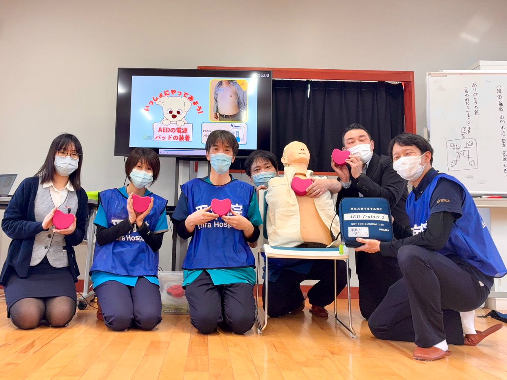
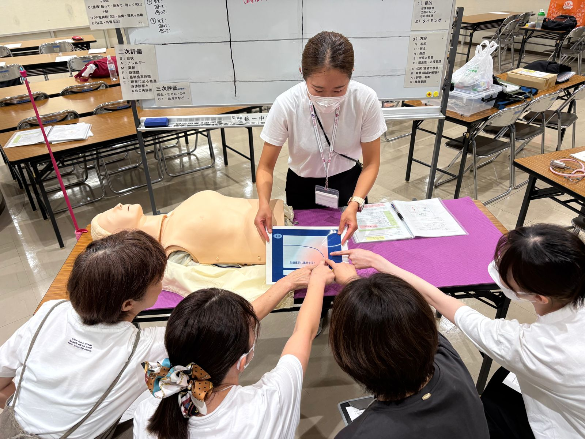
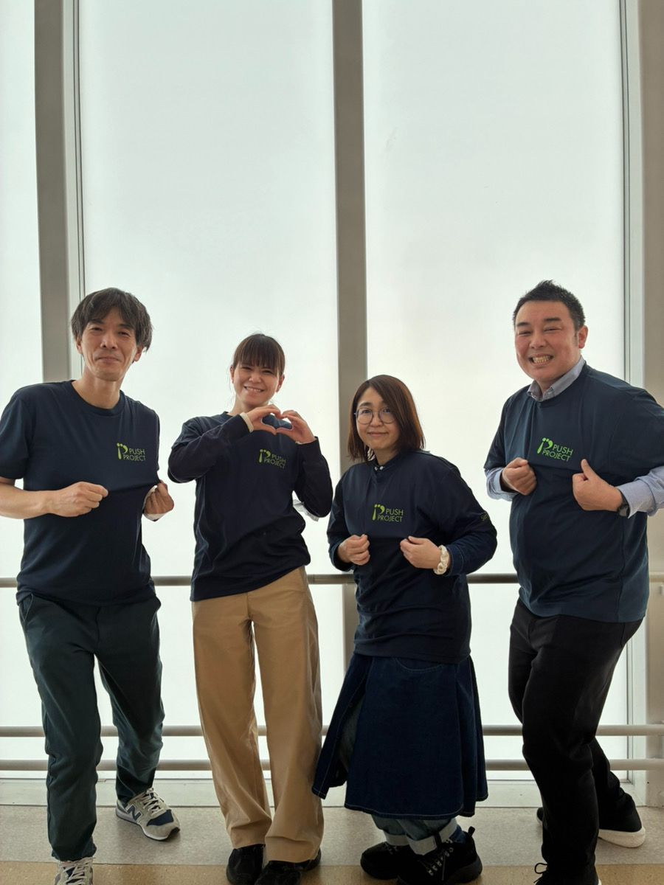

協会について
市民向けから医療従事者向けまで、それぞれのレベルに合わせた実践的な救命・ライフサポート研修を展開しています。
事業内容

救命講習の普及・啓発（PUSHプロジェクト）
「人が倒れたとき、自分にできること」をシンプルに学ぶ講習会です。胸骨圧迫（心臓マッサージ）とAEDの使い方を中心に、学校、企業、地域コミュニティへ出向いて出張講習を行っています。

院内急変回避研修（INARSコース）
医療従事者や看護教育の現場を対象とした、実践的なシミュレーション研修です。入院患者さんのわずかなサインを察知し、急変（心停止など）を未然に回避するための的確な初期対応（ファーストアクション）のスキルをはぐくみます。

地域社会の安全対策・ボランティア活動
地域のマラソン大会をはじめとするスポーツイベント等での救護・AEDチームとしての協力や、地域イベントでの安全対策ワークショップの開催など、街全体の安全を守る活動に貢献しています。
協会概要
| 名称 | 一般社団法人日本臨床ライフサポート協会 |
|---|---|
| 設立 | 2025年4月24日 （活動開始は2013年） |
| 代表理事 | 浅越 博之 |
| 所在地 | 岡山県備前市 |
| 活動地域 | 市民向け講習会：岡山県（備前市・赤磐市・岡山市・倉敷市ほか）、愛媛県松山市 INARSコース：中国・四国を拠点に、全国の病院へ |
| 連絡先 | info@japan-clinical-lifesupport.org |
沿革
- 2013年
中国・四国エリアでINARSコースの開催を始める
- 2016年
「日本臨床ライフサポート協会」として独立した運営を開始。全国で活動することも見据え、地域名ではなくこの名前を付ける
- 2020年
新型コロナウイルス感染症の流行により、集合型の研修・講習会を休止
- 2023年
INARSコースと市民向け救命講習会を中心に、集合研修を再開
- 2025年4月
一般社団法人日本臨床ライフサポート協会を設立（4月24日）
- 2025年9月
「救急の日」市民向け救命講習会を岡山（赤磐・備前）と愛媛（松山）の3会場で開催
- 2026年7〜8月
日本循環器協会「健康ハートの日」関連のPUSH講習会をスポーツ少年団などで開催（延べ240名）
- 2026年9月
「救急の日」救命講習会を赤磐・岡山西川・奉還町の3会場で開催。RSK・テレビせとうちで紹介される
- 2026年9月
180分コース（救命サポーター スタンダード）が、日本防災士機構より防災士資格取得のための救命講習として認められる
ご寄付のお願い
私たちの活動は、皆様の温かいご支援・ご寄付によって支えられています。お寄せいただいたご寄付は、講習活動の維持・拡大と救命資器材の充実のために大切に使わせていただきます。